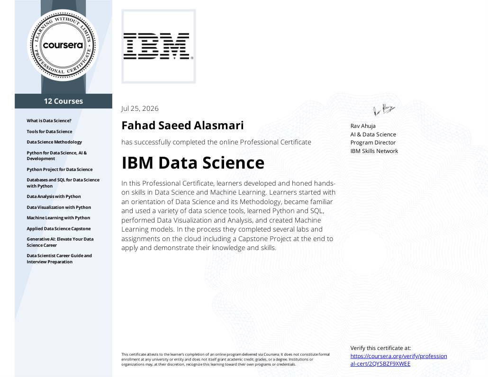
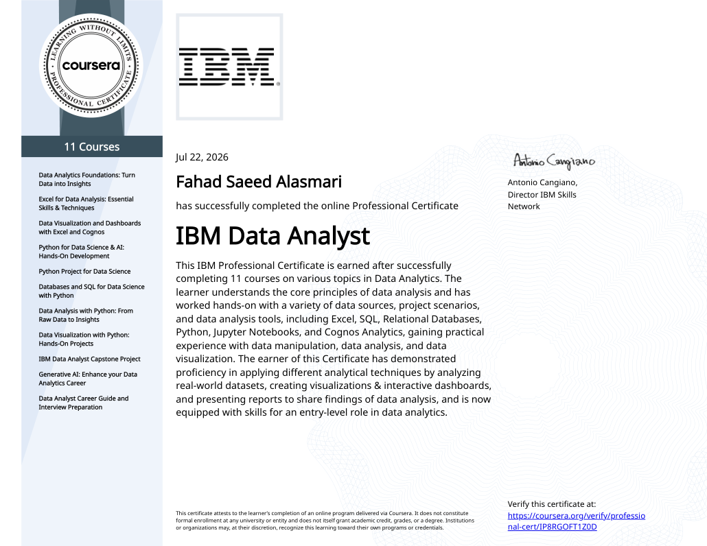
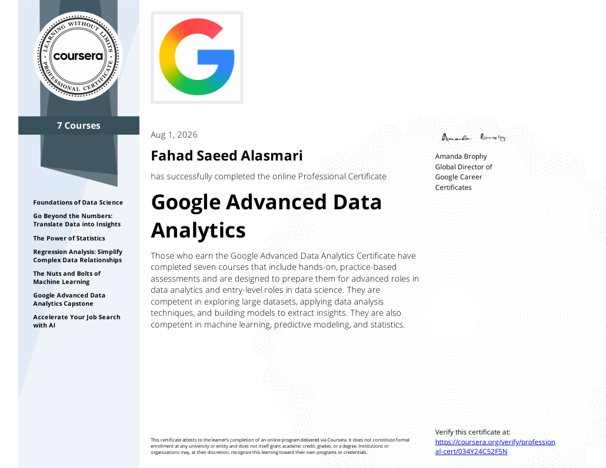
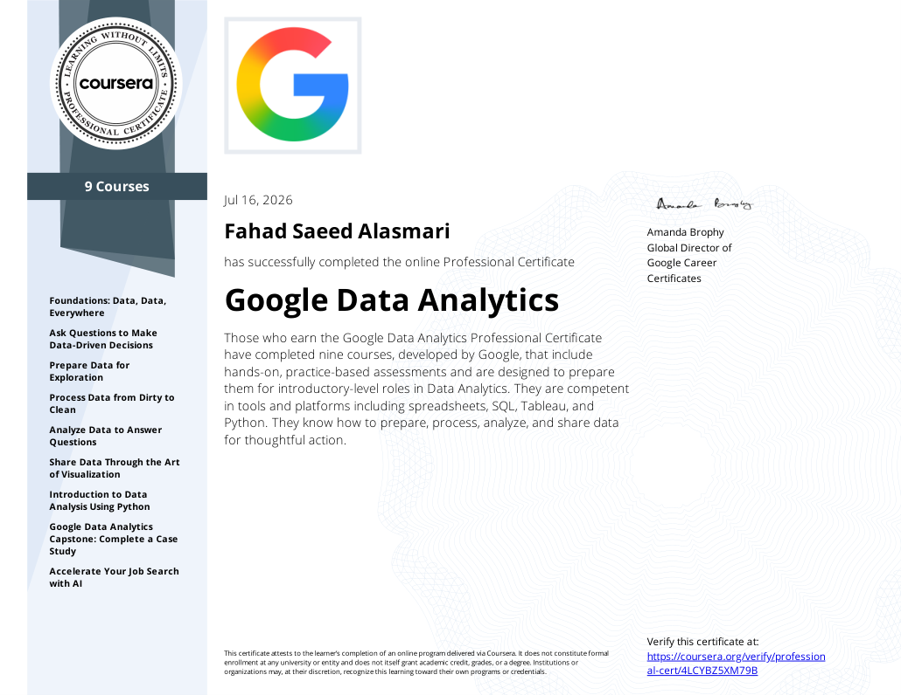
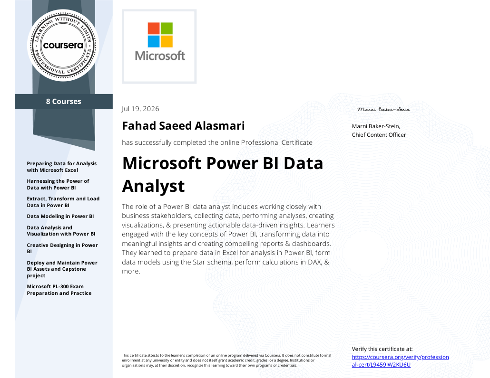

Power BI
Interactive dashboards, data modeling, DAX measures and visual storytelling.
I'm Fahad Alasmari, a data analytics professional focused on translating complex information into clear dashboards, measurable insights, and smarter decisions.
I work with data to uncover patterns, improve visibility, and support better business decisions. My experience includes Oracle HCM data auditing, workforce cost analysis, Power BI reporting, workflow automation, and predictive analytics web applications.
Good analytics doesn't just show numbers. It helps people understand what to do next.
MY APPROACHInteractive dashboards, data modeling, DAX measures and visual storytelling.
Querying, joining and transforming relational data for analysis.
Data preparation, exploration, analysis and visualization.
Advanced spreadsheets, reporting, data cleaning and analysis.
Preparing and transforming raw data into analysis-ready datasets.
Clear, accessible reports that turn metrics into useful insights.
Pulse by solutions · Tamheer Program
Six months of hands-on HR data management, workforce cost reporting, business intelligence, and predictive analytics.
Created and manually validated 800+ Oracle IDs using manual mapping. Built a comprehensive Excel employee master database with full names, dates of birth, joining and exit dates, departments, project details, project managers, and active/inactive records.
Prepared and consolidated workforce cost datasets covering Payroll and Other Payments, including salaries, GOSI, medical insurance, overtime, benefits, encashment, and end-of-service costs. Supported monthly reporting for 800+ employees across 5+ companies.
Matched and linked employee and monthly payment data across multiple worksheets using XLOOKUP and VLOOKUP, populated two Excel reporting sheets, and checked record consistency before reporting.
Prepared and transformed data in Power Query, modeled related datasets in Power BI, and developed interactive dashboards for HR and management reporting.
Developed an internal invoice tracking and validation web application and a separate predictive analytics platform for forecasting workforce-related invoice costs and analyzing vendor expenses.
Real, hands-on projects across business intelligence, SQL Server, Python, and predictive analytics.
PULSE BY SOLUTIONS · HR OPERATIONS & ANALYTICS
Developed an interactive, web-based invoice prediction and financial analytics solution to support forecasting, visibility into workforce-related invoice costs, and more informed cost-planning decisions.
The project combines data preparation, exploratory analysis, predictive modeling, and an executive-facing interface for reviewing invoice trends and forecast scenarios.
Built and queried a relational HR analytics database using foreign-key relationships, department-level employee and salary aggregations, monthly payroll summaries, and month-over-month growth calculations using SQL window functions. The Power BI report uses synthetic employee data for demonstration.
Original HR Analytics and Sales SQL queries, plus clearly labeled illustrative Superstore analyses. Explore original HR queries and example Sales Analytics queries based on the SuperstoreSales dataset, alongside SQL Server screenshots.
USE HR_Analytics_2026;
GO
SELECT
d.DepartmentName AS Department,
COUNT(e.EmployeeID) AS TotalEmployees,
AVG(CAST(e.BasicSalary AS DECIMAL(18,2)))
AS AverageSalary,
SUM(e.BasicSalary) AS TotalBasicSalary
FROM dbo.Employees e
INNER JOIN dbo.Departments d
ON e.DepartmentID = d.DepartmentID
GROUP BY d.DepartmentName
ORDER BY TotalEmployees DESC;An interactive sales analytics and machine learning application built with Python, Dash, Plotly and SQL Server. Explore historical sales (2015–2018), product and customer insights, model comparisons, and a 2027 forecasting experience.
Launch Sales Intelligence ↗Explore the Python notebook source, including data processing, visualization, and machine-learning libraries. A source-only notebook is provided because the uploaded notebook contained incomplete embedded output data; execution results are not claimed.
Launch the public notebook directly in Google Colab, or download it for local use. Running cells that use a local SQL Server requires a separate accessible data source.
import pandas as pd import matplotlib.pyplot as plt import seaborn as sns from sklearn.model_selection import train_test_split from sklearn.ensemble import RandomForestClassifierSource code · Jupyter
Invoice forecasting system analysis and statement of work.
View Project Report ↗Systems analysis and design report for HR record reconciliation.
View Project Report ↗Jupyter notebook exercise and source.
Launch in Google Colab ↗Actual code cells and saved visualizations from my Sales Analytics notebook. Browse the results section below for full-size saved charts and SQL screenshots; no local server is required.
The notebook uses a local SQL Server connection; private connection details have been removed from the public code. Download public notebook ↧
Saved outputs from the original analysis, available immediately without running Python or connecting to a local SQL Server. Select any image to inspect it at full size.
Original screenshots show SQL queries alongside the results captured in SQL Server Management Studio. These are saved snapshots, not a live database connection.
These are previously captured notebook charts. The public notebook contains source code only, so numerical tables that were not saved are not presented as executed results.





Interested in data analytics, reporting, or collaborating on a project? Connect with me on LinkedIn.
The interactive HR dashboard is a portfolio demonstration using synthetic data.